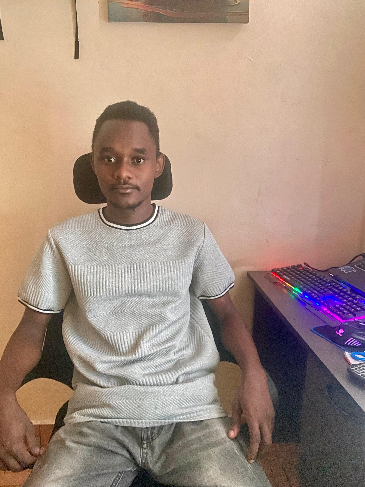

Software engineer building useful, accessible digital products.
I am Anthony Mwongela, a full-stack developer focused on responsive interfaces, reliable backend systems, and practical cloud-ready engineering.

My Story
Career narrative
The Professional Hook
I build web applications that balance clean user experience with maintainable code. My current focus is full-stack development with JavaScript, TypeScript, Next.js, APIs, databases, and cloud workflows.
The value I aim to bring is simple: products that people can actually use, teams can confidently maintain, and businesses can keep improving.
How I Got Here
My path has grown through formal software development study at KCA University, hands-on engineering practice through ALX Africa, and project work across web, DevOps, Java GUI applications, and data-focused tooling.
Each step has pushed me closer to the kind of engineering I care about most: solving real problems with thoughtful systems, clear communication, and steady iteration.
What I Want Next
I am looking for software engineering opportunities where I can contribute to full-stack, frontend, backend, or cloud-focused products while growing with a team that values quality and learning.
I am especially eager to keep improving in scalable application architecture, CI/CD, API development, accessibility, and modern product engineering.
Core Competencies
What I can do
Frontend Engineering
Responsive HTML, CSS, JavaScript, TypeScript, Bootstrap, and Next.js interfaces built for clarity and accessibility.
Backend & APIs
RESTful services, database-backed features, PHP, MySQL, PostgreSQL, MongoDB, and server-side integration work.
Cloud & DevOps
AWS, Azure, Linux, PowerShell, shell scripting, automation, deployment thinking, and infrastructure fundamentals.
AI & Data
Python data workflows with NumPy, Pandas, Matplotlib, scikit-learn, PyTorch, and TensorFlow foundations.
Team Collaboration
Clear communication, structured problem solving, Git-based workflows, and a willingness to learn in public with teammates.
Creative Tools
Figma, Adobe tools, Canva, and Blender experience that helps bridge engineering decisions with visual polish.
Why Work With Me
Values and philosophy
I believe good software should be understandable, inclusive, and dependable. I care about clean structure, accessible interfaces, clear documentation, and building in a way that makes the next improvement easier.
Outside of code, I enjoy creative digital work, exploring new tools, and learning how design, engineering, and everyday problem solving connect.
Let's Talk
Open to software engineering roles, collaboration, and technical conversations.